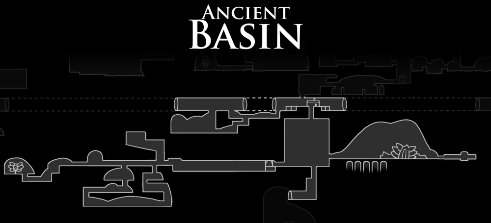

Cornifer
O cartógrafo que descansa exausto nas profundezas cinzentas e perigosas da Bacia Antiga.

Quirrel
Encontrado investigando as origines do reino e os vestígios do Vazio na borda do abismo.

O cartógrafo que descansa exausto nas profundezas cinzentas e perigosas da Bacia Antiga.
Encontrado investigando as origines do reino e os vestígios do Vazio na borda do abismo.

O cadáver reanimado de um dos Receptculos caídos, consumido e controlado por crescimentos de infecção.

Primos menores dos Mawleks que habitam os tuneis escuros cuspindo energia infecciosa.

Criaturas escuras e furtivas que espreitam nas sombras profundas do subsolo.